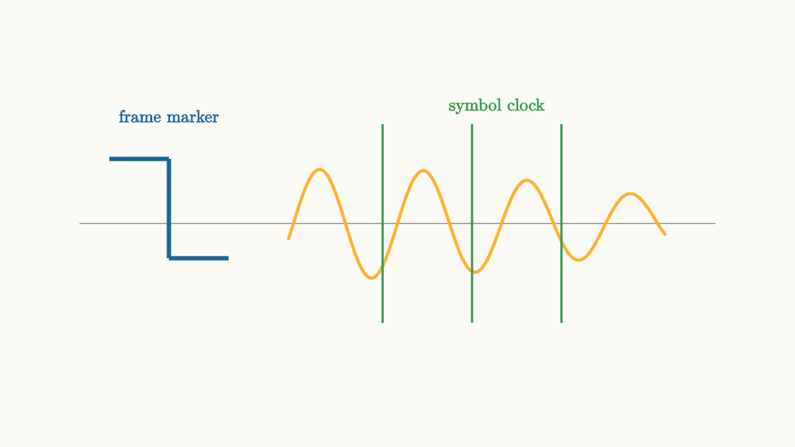

Receivers Must Find Time Phase And Users
A receiver does not begin with tidy symbols. It begins with samples from an antenna, cable, or optical detector. The samples are noisy, delayed, frequency shifted, phase shifted, and mixed with other signals.
The receiver has to discover the structure that the transmitter already knows.
It must answer three timing questions:
1. Where does a frame begin? 2. Where is each symbol's best sampling instant? 3. What carrier phase and frequency should be used for downconversion?

source
background = [0.985, 0.98, 0.955, 1]
camera = Camera(4b)
mesh diagram = block {
. stroke{GRAY, 1} Line(start: [-3.2, 0, 0], end: [3.2, 0, 0])
. stroke{BLUE, 4} Line(start: [-2.9, 0.65, 0], end: [-2.3, 0.65, 0])
. stroke{BLUE, 4} Line(start: [-2.3, 0.65, 0], end: [-2.3, -0.35, 0])
. stroke{BLUE, 4} Line(start: [-2.3, -0.35, 0], end: [-1.7, -0.35, 0])
. stroke{ORANGE, 3} ExplicitFunc(|t| 0.55 * sin(6 * t) * exp(-0.08 * (t + 0.4) * (t + 0.4)), [-1.1, 2.7, 220])
. stroke{GREEN, 2} Line(start: [-0.15, -1.0, 0], end: [-0.15, 1.0, 0])
. stroke{GREEN, 2} Line(start: [0.75, -1.0, 0], end: [0.75, 1.0, 0])
. stroke{GREEN, 2} Line(start: [1.65, -1.0, 0], end: [1.65, 1.0, 0])
. center{[-2.3, 1.08, 0]} color{BLUE} Text("frame marker", 0.62)
. center{[1.0, 1.18, 0]} color{GREEN} Text("symbol clock", 0.62)
}
"receiver alignment"
play Fade(0.6)Frame synchronization finds packet boundaries. Many systems transmit a preamble, a known pattern placed before the payload. The receiver correlates incoming samples against that known pattern. A large correlation peak says, "the frame probably starts here."
Without frame synchronization, the receiver may decode the right waveform with the wrong grouping. Bits become shifted, headers are misread, and the payload cannot be interpreted.
Symbol synchronization
Symbol synchronization finds when to sample. A pulse-shaped signal may be continuous, but decisions occur at discrete instants. Sampling a little early or late can reduce the desired symbol value and increase interference from neighbors.
Timing recovery loops estimate this sampling phase and adjust it. Some use known training symbols. Others use decision-directed updates after the receiver is already close. The goal is to place samples near the eye opening, where neighboring pulse tails disturb the decision least.
source
background = [0.985, 0.98, 0.955, 1]
camera = Camera(4b)
let Eye = |offset, col| block {
. stroke{col, 3} ExplicitFunc(|t| 0.75 * sin(PI * (t + offset)) * exp(-0.18 * t * t), [-2.4, 2.4, 220])
. stroke{col, 3} ExplicitFunc(|t| -0.75 * sin(PI * (t + offset)) * exp(-0.18 * t * t), [-2.4, 2.4, 220])
}
"early sampling"
mesh eye = Eye(offset: -0.25, col: BLUE)
mesh sampler = stroke{ORANGE, 3} Line(start: [-0.25, -1.05, 0], end: [-0.25, 1.05, 0])
mesh label = center{[0, 1.42, 0]} color{DARK_GRAY} Text("move the sample toward the eye opening", 0.62)
play Write(0.9)
play Fade(0.4)
"aligned sampling"
eye = Eye(offset: 0, col: GREEN)
sampler = stroke{ORANGE, 3} Line(start: [0, -1.05, 0], end: [0, 1.05, 0])
play Lerp(1.0)An eye diagram overlays many symbol intervals on the same plot. A wide open eye means the receiver has margin against noise and timing error. A closed eye means decisions are fragile.
Carrier synchronization
Carrier synchronization estimates carrier frequency and phase. If the receiver's local oscillator is not aligned with the incoming carrier, the baseband constellation rotates.
For QAM, this can be fatal. A small constant phase error tilts the decision regions. A frequency error creates a phase error that grows with time. Carrier recovery loops use pilots, preambles, or the structure of the constellation to keep the receiver's phase reference locked.
This is why passband communication is more than shifting a signal to a carrier. The receiver must also reconstruct the coordinate system in which the constellation was drawn.
Multiple access
Once a receiver can find one signal, a network has to let many users share the medium. Multiple access is the set of rules that prevents users from becoming each other's interference.
There are several basic strategies:
1. Frequency-division multiple access gives users different carrier bands. 2. Time-division multiple access gives users different time slots. 3. Code-division multiple access gives users different spreading codes. 4. Orthogonal frequency-division multiple access assigns groups of subcarriers to users. 5. Random access lets users transmit opportunistically, then handles collisions with retries or scheduling.
Each method relies on synchronization. Time slots require shared timing. Frequency channels require stable carrier placement. Codes require alignment well enough for correlation to separate users. OFDMA requires tight frequency and time control so subcarriers stay orthogonal.
The receiver completes the system
The transmitter chooses symbols, pulse shapes, carriers, frames, and access rules. The receiver has to infer those choices from imperfect samples.
That is the central lesson of digital communications theory. The math is not only about sending a waveform. It is about creating structure that a receiver can recover: symbol values, sample timing, carrier phase, frame boundaries, and user separation.
When those structures line up, a messy physical waveform becomes a sequence of reliable bits. When they drift apart, the same waveform turns into uncertainty.